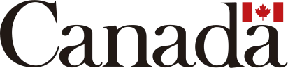
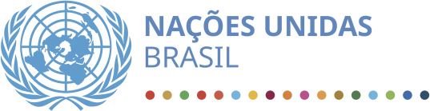
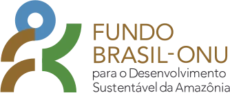
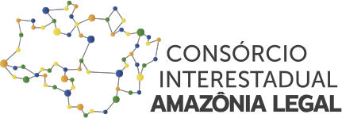
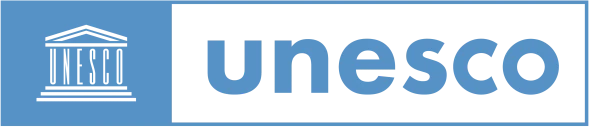
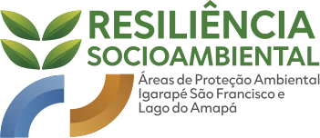
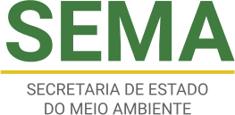
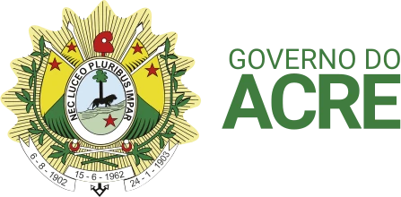
Programa de Resiliência Socioambiental nas APAs Igarapé São Francisco e Lago do Amapá
Estados da Amazônia Legal
Acre
Rio Branco e Bujari
Áreas de Proteção Ambiental Igarapé São Francisco e Lago do Amapá
Uma iniciativa de cooperação internacional que reúne instituições nacionais e internacionais para fortalecer a conservação ambiental, promover o desenvolvimento sustentável e ampliar a capacidade das comunidades das Áreas de Proteção Ambiental (APAs) Igarapé São Francisco e Lago do Amapá de enfrentar desafios ambientais, climáticos e sociais.
Conservação, desenvolvimento sustentável e inclusão social
O Programa foi criado para fortalecer a conservação ambiental e aumentar a resiliência socioambiental de dois territórios estratégicos para Rio Branco, capital do Acre, e parte do município de Bujari: as APAs Igarapé São Francisco e Lago do Amapá. Essas unidades de conservação são essenciais para a proteção dos recursos hídricos, da biodiversidade e da qualidade de vida das comunidades que vivem em seu entorno.
A proposta integra proteção ambiental, desenvolvimento sustentável e inclusão social, com ações voltadas à redução de vulnerabilidades, ao fortalecimento da gestão das APAs, à recuperação de áreas degradadas, à ampliação da segurança hídrica, ao incentivo a atividades econômicas sustentáveis e à maior participação das comunidades na gestão do território.
Uma parceria entre governo, ONU e cooperação internacional
- ExecuçãoGoverno do Acre, por meio da Secretaria de Estado do Meio Ambiente (Sema)
- ParceriaOrganização das Nações Unidas (ONU), por meio da UNESCO
- FinanciamentoFundo Brasil-ONU para o Desenvolvimento Sustentável da Amazônia
- ApoioConsórcio Interestadual de Desenvolvimento Sustentável da Amazônia Legal (CAL)
- DoaçãoGoverno do Canadá
As APAs e sua importância
As APAs Igarapé São Francisco e Lago do Amapá são territórios estratégicos para a proteção dos recursos hídricos, da biodiversidade e da qualidade de vida de milhares de pessoas que vivem em Rio Branco. O Programa conecta a conservação desses territórios ao fortalecimento das condições sociais e econômicas das comunidades e à sua capacidade de responder às mudanças ambientais e climáticas.
APA Igarapé São Francisco
APA Lago do Amapá
O que é resiliência socioambiental?
É a capacidade de um território, de suas comunidades, instituições e ecossistemas de enfrentar desafios, adaptar-se às mudanças e recuperar-se de impactos ambientais e sociais sem perder sua capacidade de gerar qualidade de vida. Isso significa proteger os recursos naturais, fortalecer as comunidades e preparar os territórios para responder melhor a situações como queimadas, enchentes, secas, desmatamento e mudanças climáticas.
Vulnerabilidade socioambiental: o que o Programa busca enfrentar
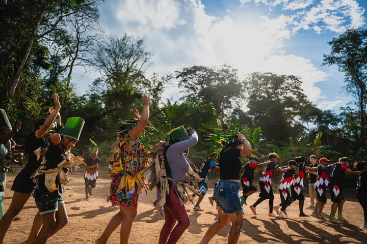
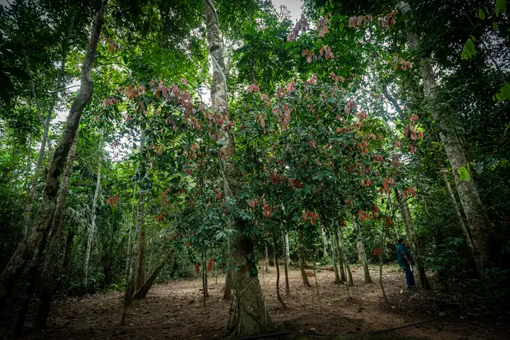
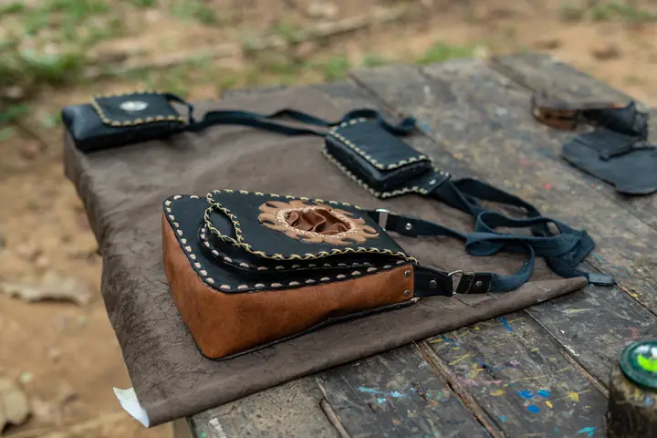
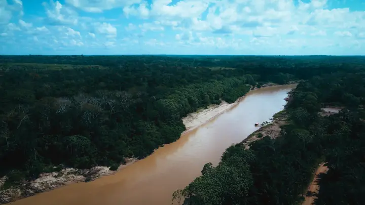
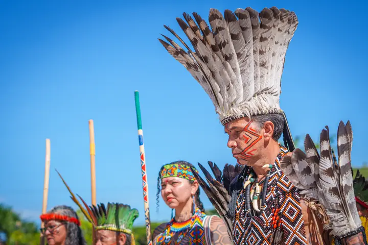
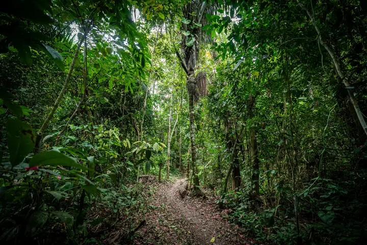
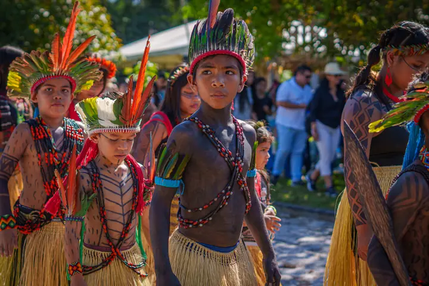
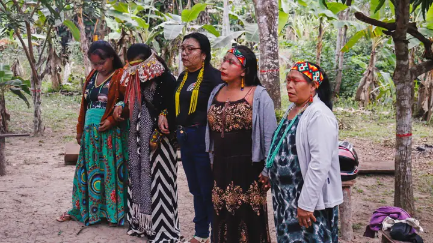
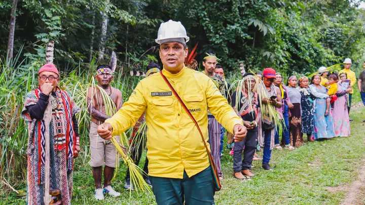
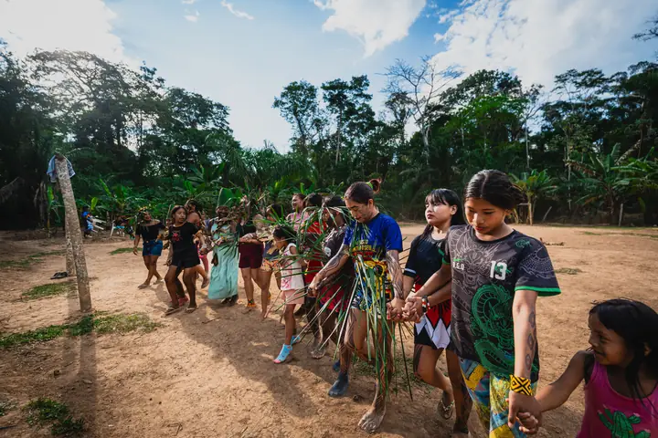
Os quatro eixos do Programa + eixo transversal
Governança
Pessoas no centro da gestão
Restauração Florestal
Regenerando a vida e o solo
Bioeconomia
Gerando renda em harmonia com a natureza
Segurança Hídrica
Água limpa para as pessoas e o ecossistema
Igualdade de gênero, equidade étnico-racial e inclusão social
Governança
Pessoas no centro da gestão
Objetivo Fortalecer a participação social, a gestão das APAs e a capacitação das comunidades, promovendo governança ambiental com foco na igualdade de gênero e na inclusão social.
Principais ações
- Fortalecimento dos Conselhos Gestores
- Capacitações
- Educação ambiental
- Campanhas educativas
- Participação comunitária
Restauração Florestal
Regenerando a vida e o solo
Objetivo Recuperar áreas degradadas, proteger nascentes e ampliar a cobertura vegetal para fortalecer a segurança hídrica e reduzir riscos ambientais.
Principais ações
- Implantar Áreas de Preservação Permanente (APPs)
- Mapeamento, catalogação e proteção de nascentes
- Fomentar o Cadastro Ambiental Rural (CAR) nas APAs
- Recuperação florestal
Bioeconomia
Gerando renda em harmonia com a natureza
Objetivo Incentivar atividades econômicas sustentáveis, fortalecer a agricultura familiar, valorizar produtos da sociobiodiversidade e estimular o turismo de base comunitária.
Principais ações
- Fortalecimento de unidades produtivas e de organizações comunitárias
- Desenvolvimento de produtos e serviços da sociobiodiversidade
- Capacitação e assistência técnica para comunidades locais
- Incentivo à agricultura familiar e a práticas produtivas sustentáveis
- Apoio ao turismo de base comunitária por meio de trilhas e infraestrutura social para valorização das APAs
- Implantação de estruturas e iniciativas de uso público e educação ambiental
- Elaboração de materiais técnicos e orientadores
- Realização de oficinas e participações em eventos
- Fortalecimento de redes, parcerias e cooperação institucional
Segurança Hídrica
Água limpa para as pessoas e o ecossistema
Objetivo Fortalecer a segurança hídrica das comunidades por meio de infraestrutura, gestão de riscos, monitoramento ambiental e soluções sustentáveis para adaptação e mitigação de eventos extremos.
Principais ações
- Construção de fossas sépticas para saneamento básico
- Aquisição e instalação de plataforma para monitoramento hidrometeorológico nas APAs
- Ampliação da área protegida e dos serviços ecossistêmicos
- Elaboração de plano de adaptação e mitigação aos eventos extremos específicos para as APAs
Igualdade de gênero, equidade étnico-racial e inclusão social
Princípios presentes nas ações do Programa, ampliando a participação, o acesso a oportunidades e a inclusão nos processos de decisão relacionados à gestão e ao desenvolvimento do território.
Contribuição para os Objetivos de Desenvolvimento Sustentável (ODS)
Ao integrar conservação ambiental, segurança hídrica, restauração de ecossistemas, desenvolvimento econômico sustentável, inclusão social e fortalecimento da governança, o Programa contribui para o alcance dos Objetivos de Desenvolvimento Sustentável (ODS) da Agenda 2030.
As ações desenvolvidas nas APAs estão relacionadas a diferentes metas dos ODS, especialmente aquelas voltadas à água e saneamento, redução das vulnerabilidades, conservação dos ecossistemas, enfrentamento das mudanças climáticas, trabalho e geração de renda, igualdade de gênero, participação social e fortalecimento de parcerias.
Dessa forma, os ODS funcionam como uma referência para conectar as ações realizadas nos territórios a compromissos mais amplos de desenvolvimento sustentável, reforçando a integração entre conservação ambiental, qualidade de vida e desenvolvimento das comunidades. Confira abaixo quais objetivos as ações do Programa contemplam:
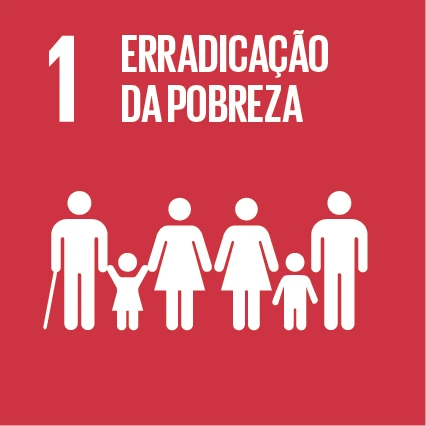
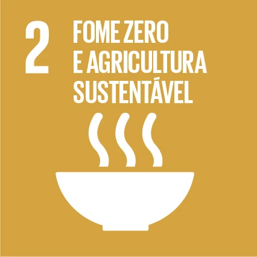
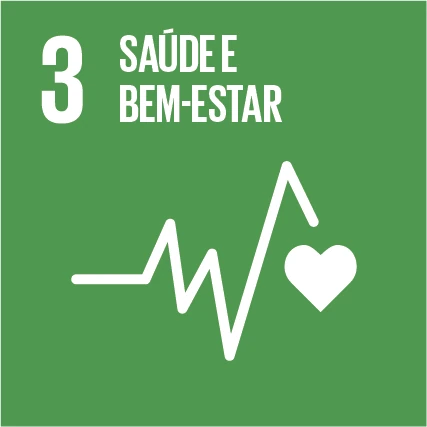
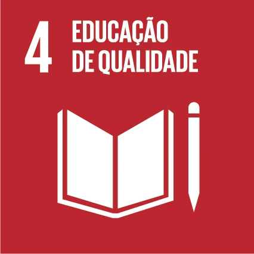
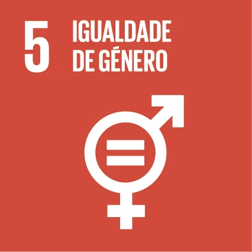
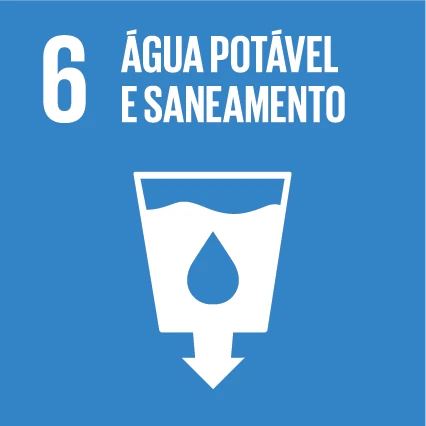
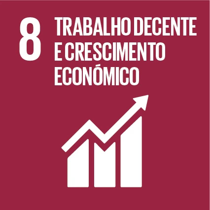
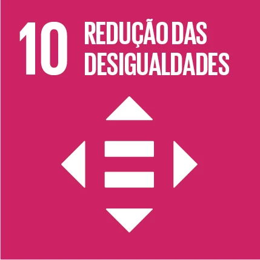
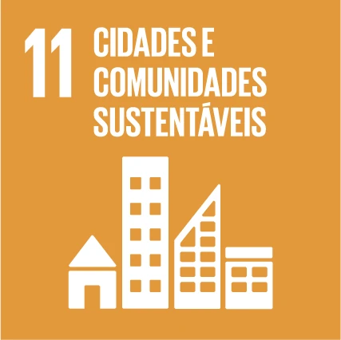
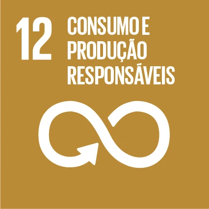
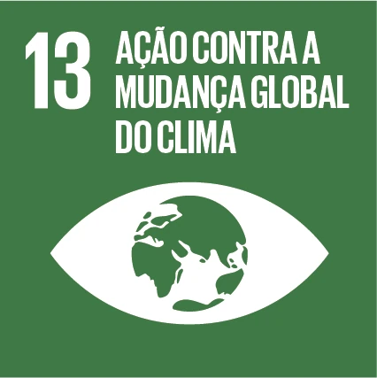
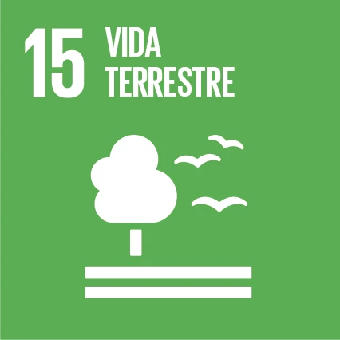
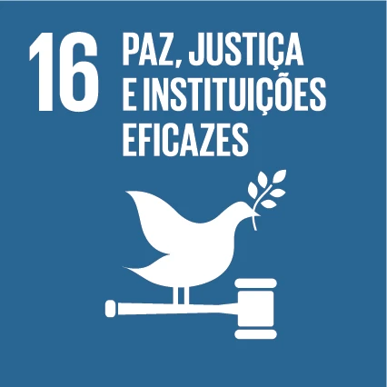
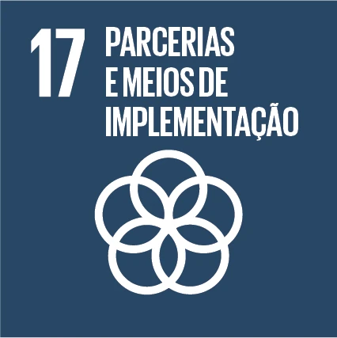
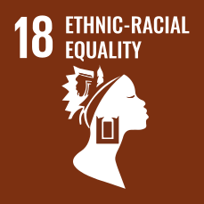
Contribuição para o Marco Global de Biodiversidade de Kunming-Montreal
O Marco Global de Biodiversidade de Kunming-Montreal, adotado em 2022 no âmbito da Convenção sobre Diversidade Biológica (CDB), estabelece uma agenda global para deter e reverter a perda de biodiversidade, com 23 metas orientadas à ação para 2030. O Programa contribui para esse compromisso ao integrar a conservação e a restauração de ecossistemas, a proteção de nascentes e recursos hídricos, a resiliência às mudanças climáticas, atividades produtivas sustentáveis e a valorização das contribuições da natureza para as comunidades. Também fortalece a governança, a participação social, a produção e a disponibilização de informações, a capacitação, a igualdade de gênero e a inclusão social na gestão e conservação do território.
Reduzir ameaças à biodiversidade
Atender às necessidades das pessoas por meio do uso sustentável e da repartição de benefícios
Ferramentas e soluções para implementação e integração
Abertura da festividade · dança tradicional Huni Kuin (Kaxinawá)
Expediente
Governadora
- Mailza Assis
Secretário de Meio Ambiente do Acre
- Leonardo das Neves Carvalho
Secretária Adjunta de Meio Ambiente do Acre
- Renata Souza
Diretor de Meio Ambiente
- Erisson Cameli Santiago
Pontos focais na SEMA
- Erisson Cameli Santiago
- Luciana Cristina Rôla de Souza
Coordenadores do Programa pela UNESCO
- Elielton da Silva Ferreira
- Larisse Cristine Sá Costa Cruz
Coordenadores dos Eixos
- Raco Tanomaru Junior
- Silvia Maria Machado Uszacki
- Cláudio Roberto da Silva Cavalcante
- Tayna Neri de Souza Bortoloso
- Maria Antonia Zabala de Almeida Nobre
- Daniele Lima de Castro Bezerra
- Luciana Cristina Rola de Souza
- Clarice Oliveira Farias
- Marilene Vasconcelos da Silva Brazil
- Tiffany Maia Dimas
- Madalena Ferreira da Silva
Conteúdo
- Evander Freitas
Revisão de texto
- Ana Thaís Cordeiro
- Evander Freitas
Projeto gráfico e diagramação
- Ellem Jady
Fotografia
- Gaio Nogueira
Transparência para quem protege o Lago do Amapá e o Igarapé São Francisco
Este site é o portal público de transparência do Programa — reúne, num só lugar, o mapa das entregas realizadas, os resultados alcançados, a execução financeira agregada e a linha do tempo das principais ações, para que qualquer pessoa possa acompanhar o andamento do trabalho nas APAs do Lago do Amapá e do Igarapé São Francisco.
Por trás da marca
A identidade visual do Programa nasce da paisagem que ele protege.
- As folhas verdes representam a biodiversidade e a recuperação ambiental das APAs.
- As formas curvas em azul remetem aos igarapés e rios que o Programa trabalha para proteger.
- O laranja simboliza a transformação social e o fortalecimento das comunidades que vivem nesses territórios.
Juntos, os três elementos traduzem o que o próprio nome do Programa propõe: resiliência entre natureza, água e as pessoas do território.
Cartilha do Programa
Todo o conteúdo desta página em formato de cartilha, em português e inglês, para ler offline, imprimir ou compartilhar.
Baixar PDF (4,1 MB)Lago do Amapá · APA Lago do Amapá · maio 2026 · foto da capa da cartilha (Gaio Nogueira)